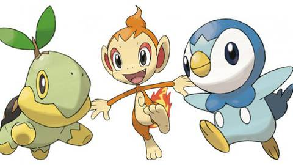

Introdução
O processamento de vídeo tornou-se uma ferramenta essencial em diversas áreas, como segurança, entretenimento, saúde e automação industrial. Este relatório aborda o desenvolvimento e a implementação de um sistema de captura, processamento e análise de vídeo utilizando câmeras conectadas a uma plataforma Linux. O objetivo é explorar as etapas de entrada e saída de vídeo, desde a captura pela câmera até o processamento e visualização dos dados.
Utilizando Linux como sistema operacional devido sua flexibilidade e suporte a uma vasta gama de bibliotecas e ferramentas de código aberto voltadas para o processamento de vídeo. Como as ferramentas OpenCV, é possível realizar desde simples transformações visuais até complexas análises em tempo real.
OpenCV: Biblioteca de visão computacional que permite a captura, manipulação e processamento de imagens e vídeos. É amplamente usada para aplicar filtros, detectar objetos, rastrear movimentos, entre outros.
Fundamentos Básicos
A entrada de vídeo refere-se ao processo de captura de imagens em movimento a partir de uma fonte, como câmeras, arquivos de vídeo ou transmissões ao vivo. As principais fontes de entrada de vídeo incluem: Câmeras Digitais, Webcams, Arquivos de vídeo.
A saída de vídeo refere-se ao processo de exibir, transmitir ou armazenar os dados de vídeo após serem processados. As formas mais comuns de saída incluem:Monitores, telas, armazenamento em arquivos.
Materiais e Metódos
Materiais:
- Webcam
- Objeto
- Programas de captura
- Linux
- Imagens e videos providenciados
Metódos
Foram utilizadas as ferramentas:
video_read_from_file: onde o arquivo de entrada era um arquivo de vídeo e a saída a execução do vídeo no monitor.
video_read_from_image_sequence: onde a entrada é uma pasta com uma sequencias de imagens e a saída é a execução da imagens como um vídeo. Neste programa foi realizado uma modificação no arquivo .cpp pois o nome da pasta com as imagens estava errado.
video_read_from_webcam: onde a entrada são os frames capturados pela webcam e a saída é a exibição do vídeo no monitor.
video_write_from_webcam: onde a entrada são os frames da webcam e a saída é um arquivo de vídeo com a captura da webcam.
video_write_to_file: onde a entrada é um arquivo de vídeo e a saída é outro arquivo de vídeo.
A imagem dos avatares e dos membros do grupo foi montada em um editor de imagens.
Resultados e Analises
Videos Gravados:
Objeto com movimentos lentos
Objeto com movimentos rapidos
Pessoa com movimentos lentos
Pessoa com movimentos rapidos
Imagens tiradas:

Avatares

Imagem de todos os membros da equipe
Análise:
Escrever sobre algumas propriedades como o movimento embaçando a imagens nos videos e a qualidade das fotos e videos
Conclusões e Comentários Finais
Fazer um resumo sobre tudo isso ai